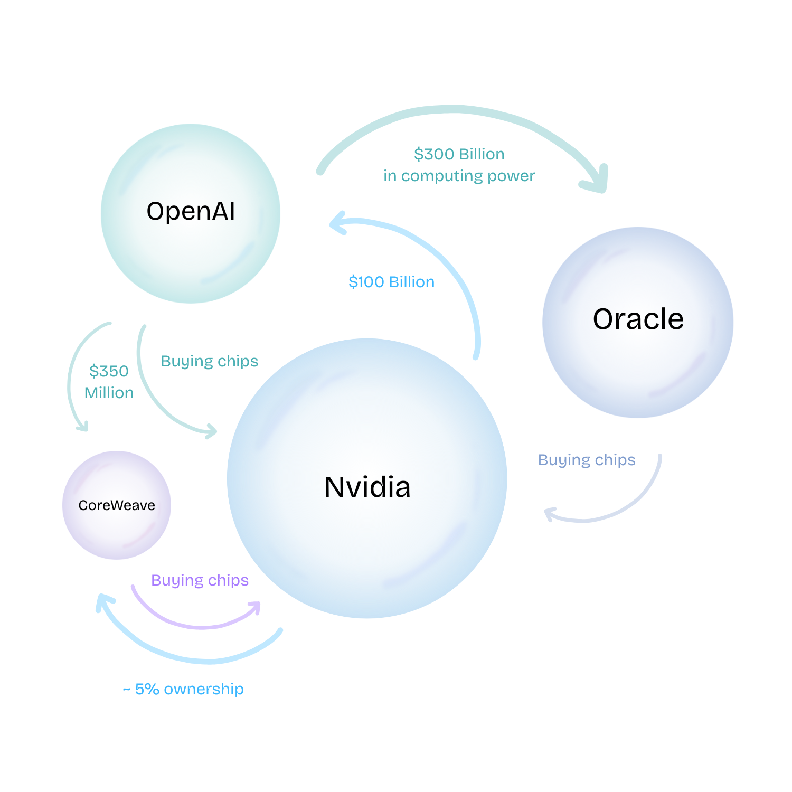

Are we in a phase where investors as a whole are overexcited about AI? … My opinion is yes.
This is a kind of industrial bubble.
The risk of a sharp market correction has increased.
I think no company is going to be immune, including us.

Advanced AI could enable much more extreme power concentration than we’ve seen so far.
If human labor loses its value, then this strikes me as bad news for democracy.Ben Garfinkel, Is Democracy a Fad?